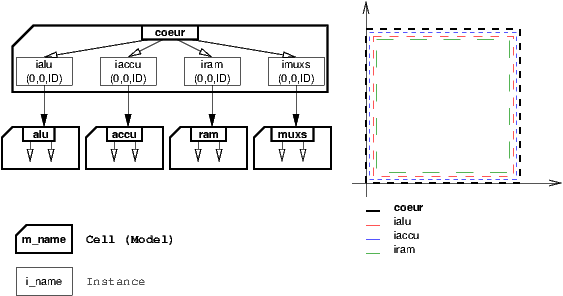
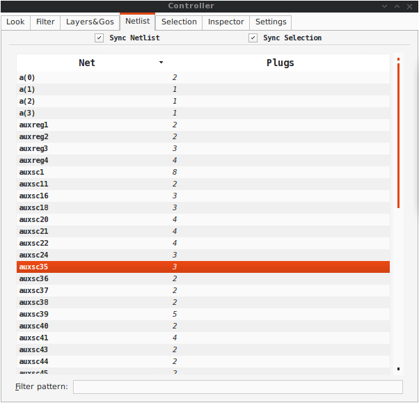
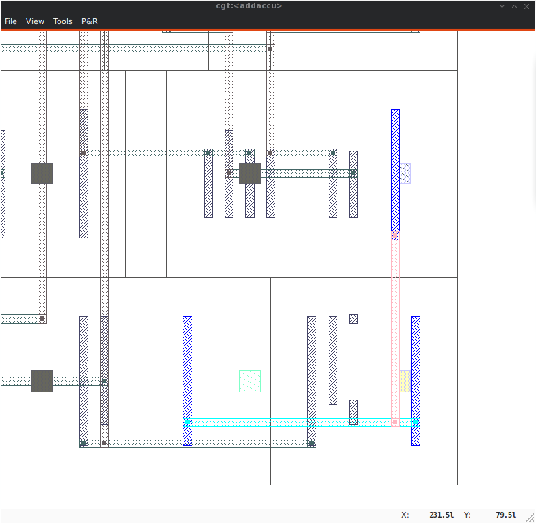
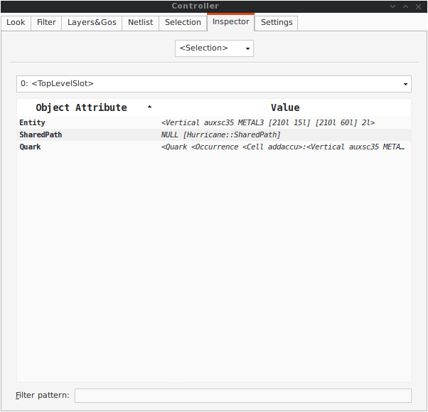
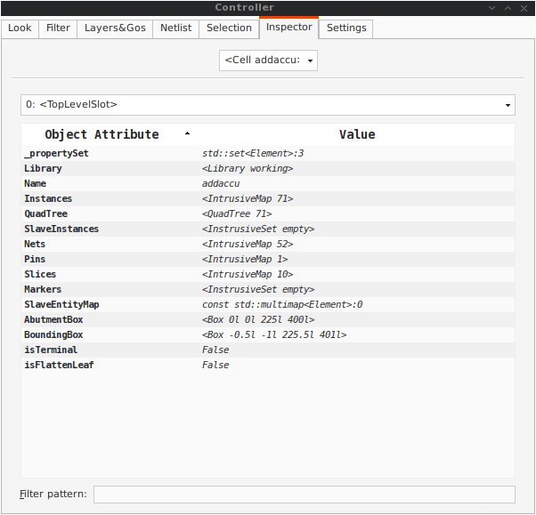
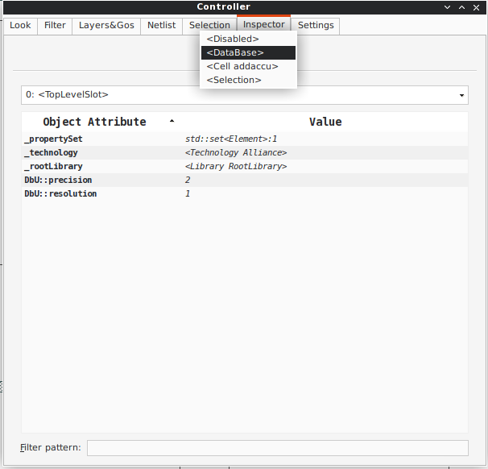

Abstract¶
|Coriolis| is a set of tools for |VLSI| backend. It’s main features are :
An analytic placer |Etesian| (based on |Coloquinte|).
A router |Katana| for digital designs. An extension toward mixed design is currently under development.
|Python| fast prototyping capabilities and layout procedural description.
|Coriolis| is a replacement of the |Alliance| place and route tools.
Credits & License¶
| Hurricane | Rémy Escassut & Christian Masson |
| Etesian | Gabriel Gouvine |
| Stratus | Sophie Belloeil |
| Katana (global) | Damien Dupuis |
| Katana (detailed), Unicorn | Jean-Paul Chaput |
The |Hurricane| data-base is copyright© |Bull| 2000-2019 and is released under the terms of the |LGPL| license. All other tools are copyright© |UPMC| 2008-2018, |SorbonneUniversite| 2018-2019 and released under the |GPL| license.
Others important contributors to |Coriolis| are Christophe |Alexandre|, Roselyne |Chotin|, Hugo |Clement|, Marek |Sroka| and Wu |Yifei|.
The |Katana| router makes use of the |Flute| software, which is copyright© Chris C. N. |Chu| from the Iowa State University (http://home.eng.iastate.edu/~cnchu/).
Complete Design Flow & Examples¶
While |Coriolis| can be used stand-alone, it is in fact part of a more complete design flow build upon |Yosys| and |Alliance|. In addition, a set of demos and examples are supplied in the repository |alliance-check-toolkit|.
|Yosys| :
An |rpm| packaged version is available here: (works fine with linux el7, for later visit https://github.com/YosysHQ/yosys)
-
|alliance-check-toolkit| |git| repository:
Installation¶
We reccomend installing directly from Pypi <https://pypi.org/>`_. First install Python 3.9 or later as appropriate for your system, then:
pip3 install coriolis-eda
You can also install coriolis and alliance using RPM and DEB packages.
rpm -Uvh coriolis-2.5.5-1.el9.x86_64.rpm alliance-5.0.0-1.el9.x86_64.rpm
Building from Source¶
Installing on |Debian| 12, |Ubuntu| 22 or compatible distributions¶
First, install or check that the required prerequisites are installed:
dummy@lepka:~> sudo apt install build-essential git ccache python3 python3-pip \
python3-venv doxygen pelican texlive-latex-recommended \
bison flex qtbase5-dev libqt5svg5-dev libqwt-qt5-dev \
libbz2-dev rapidjson-dev libboost-all-dev libeigen3-dev \
libxml2-dev pkg-config meson
install pdm
curl -sSL https://pdm-project.org/install-pdm.py | python3 -
Second step is to create the source directory and pull the |git| repository:
dummy@lepka:~> mkdir -p ~/coriolis-2.x/src
dummy@lepka:src> cd ~/coriolis-2.x/src
dummy@lepka:src> git clone --recurse-submodules https://github.com/lip6/coriolis
Third and final step, build & install:
dummy@lepka:src> cd coriolis
dummy@lepka:coriolis> make -f Makefile.LIP6 install
To install |alliance|
dummy@lepka:coriolis> make -f Makefile.LIP6 install_alliance
To documentation
dummy@lepka:coriolis> make -f Makefile.LIP6 install_docs
Installing on |Red Hat Enterprise Linux| 9, or compatible distributions¶
First, install prerequisites to install and build coriolis:
dummy@lepka:~> sudo yum install python3-pip git cmake gcc-c++ clang \
libstdc++-devel libxml2-devel flex bison boost-devel \
boost-python3 boost-filesystem boost-regex boost-wave \
bzip2-devel python3-devel texlive
To install pdm
dummy@lepka:~> curl -sSL https://pdm-project.org/install-pdm.py | python3 -
Install meson, ninja and pelican
dummy@lepka:~> python3 -m pip install meson ninja pelican
Install Eign3 and doxygen
dummy@lepka:~> sudo dnf --enablerepo=crb install eigen3-devel doxygen qt5 qt5-devel
Install Rapidjson
dummy@lepka:~> git clone https://github.com/Tencent/rapidjson.git
dummy@lepka:~> git submodule update --init
dummy@lepka:~> cd rapidjson
dummy@lepka:rapidjson> mkdir build
dummy@lepka:rapidjson> cd build
dummy@lepka:rapidjson> cmake ..
dummy@lepka:rapidjson> sudo make install
Second step is to create the source directory and pull the |git| repository:
dummy@lepka:~> mkdir -p ~/coriolis-2.x/src
dummy@lepka:src> cd ~/coriolis-2.x/src
dummy@lepka:src> git clone --recurse-submodules https://github.com/lip6/coriolis
Third and final step, build & install:
dummy@lepka:src> cd coriolis
dummy@lepka:coriolis> make -f Makefile.LIP6 install
To documentation
dummy@lepka:coriolis> make -f Makefile.LIP6 install_docs
Hooking up into |Alliance|¶
|Coriolis| relies on |Alliance| for the cell libraries. So after installing or packaging, you must install it so that it can found those libraries.
First clone,
dummy@lepka:src> git clone https://github.com/lip6/alliance
Then install it.
dummy@lepka:coriolis> make -f Makefile.LIP6 install_alliance
Executing a Benchmark¶
Alliance-check-toolkit comprises of several benchmarks and examples. To execute a circuit with coriolis, first, you have to clone alliance-check-toolkit.
dummy@lepka:src> cd ~/coriolis-2.x/src
dummy@lepka:src> git clone https://github.com/lip6/alliance-check-toolkit
Before, executing a circuit, install doit and yosys.
To install python doit.
dummy@lepka:~> pip install doit==0.33.0
To install yosys on |Debian| 12 or |Ubuntu| 22 or compatible distributions
Prerequisites of yosys,
dummy@lepka:~> sudo apt-get install tcl-dev readline-dev libffi-dev
dummy@lepka:~> sudo apt-get update
dummy@lepka:~> sudo apt-get install yosys
To install yosys on |RHEL| 9 or compatible distributions
dummy@lepka:~> sudo yum install clang tcl-devel readline-devel bison flex libffi-devel
dummy@lepka:~> git clone https://github.com/YosysHQ/yosys.git
dummy@lepka:~> cd yosys
dummy@lepka:yosys> make clean
dummy@lepka:yosys> sudo make install
After installting doit and yosys, navigate to exacte directory of benchmark, as an example, arlet6502
dummy@lepka:~> coriolis-2.x/src/alliance-check-toolkit/benchs/arlet6502/sky130_c4m
dummy@lepka:sky130_c4m> ../../../bin/crlenv.py doit list
you can perform all the steps using the follwoing commands, such as, for sythesis,
dummy@lepka:sky130_c4m> ../../../bin/crlenv.py doit yosys
Help¶
doit list – shows all possible commands
doit yosys– This command performs logical systhesis. It takes Arlet6502.v as an input and generate Arlet6502.blifdoit b2v– It transforms Arlet6502.blif to coriolis netlist format. it takes Arlet6502.blif as an input and generates two files, Arlet6502.vst (structrural VHDL), and Arlet6502.spi (structural spice model).doit pnr– It performs placement and routing and genarates final physical layout file Arlet6502_cts_r.ap. It also generates Arlet6502_cts_r.spi and Arlet6502_cts_r.vst. It depends on Arlet6502.vst and Arlet6502.spi. You can run this command directly, it performs frist previous steps automatically.doit cgt– Open physcial layout file on cgt. click on File->open cell, enter the name of the design, such as Arlet6502_cts_r.doit druc– Symbolic layout checker, It is a design rule check (druc). It depends on arlet6502_cts_r and generates an error file arlet6502_cts_r.drc. It also generates arlet6502_cts_r_rng.gds and arlet6502_cts_drc.gds.doit cougar– Symbolic layout extractor, it generates arlet6502_cts_r_ext.vst.doit lvx– Gate Netlist Comparator, it compares chip layout against extracted netlist.
Clean¶
doit clean_flow – remove all generated files.
CGT - The Graphical Interface¶
Overview¶
The |Coriolis| graphical interface is split up into two windows.
The Viewer, with the following features:
Basic load/save capabilities.
Displays the current working cell. Could be empty if the design is not yet placed.
Executes Stratus Scripts.
Menu to run the tools (placement, routage).
Features are detailed in Viewer & Tools.
{kind=link}
The Controller, which allows to:
Tweak what is displayed by the Viewer. Through the Look, Filter and Layers&Gos tabs.
Browse the |netlist| with eponym tab.
Show the list of selected objects (if any) with selection
Walk through the Database, the Cell or the Selection with Inspector. This is an advanced feature, reserved for experimented users.
The tab Settings which gives access to all the settings. They are closely related to Configuration & Initialisation.
{kind=link}
Viewer & Tools¶
|Stratus| Netlist Capture¶
|Stratus| is the replacement for |GenLib| procedural netlist capture language. It is designed as a set of |Python| classes, and comes with it’s own documentation (Stratus Documentation)
The |Hurricane| Data-Base¶
The |Alliance| flow is based on the |MBK| data-base, which has one data-structure for each view. That is, |LOFIG| for the logical view and |PHFIG| for the physical view. The place and route tools were responsible for maintaining (or not) the coherency between views. Reflecting this weak coupling between views, each one was stored in a separate file with a specific format. The logical view is stored in a |vst| file in |VHDL| format and the physical in an |ap| file in an ad-hoc format.
The |Coriolis| flow is based on the |Hurricane| data-base, which has a unified structure for logical and physical view. That data structure is the |Cell| object. The |Cell| can have any state between pure netlist and completly placed and routed design. Although the memory representation of the views has deeply changed we still use the |Alliance| files format, but they now really represent views of the same object. The point is that one must be very careful about view coherency when going to and from |Coriolis|.
As for the second release, |Coriolis| can be used only for three purposes :
Placing a design, in which case the |netlist| view must be present.
Routing a design, in that case the |netlist| view and the |layout| view must be present and |layout| view must contain a placement. Both views must have the same name. When saving the routed design, it is advised to change the design name otherwise the original unrouted placement in the |layout| view will be overwritten.
Viewing a design, the |netlist| view must be present, if a |layout| view is present it still must have the same name but it can be in any state.
Synthetizing and loading a design¶
|Coriolis| supports several file formats. It can load all file format from the |Alliance| toolchain (.ap for layout, behavioural and structural vhdl .vbe and .vst), BLIF netlist format as well as benchmark formats from the ISPD contests.
It can be compiled with LEF/DEF support, although it requires acceptance of the SI2 license and may not be compiled in your version of the software.
Synthesis under Yosys¶
You can create a BLIF file from the |Yosys| synthetizer, which can be imported under Coriolis. Most libraries are specified as a .lib liberty file and a .lef LEF file. |Yosys| opens most .lib files with minor modifications, but LEF support in Coriolis relies on SI2. If Coriolis hasn’t been compiled against it, the library is given in |Alliance| .ap format. Some free libraries already provide both .ap and .lib files.
Once you have installed a common library under |Yosys| and Coriolis, just synthetize your design with |Yosys| and import it (as Blif without the extension) under Coriolis to perform place&route.
Synthesis under Alliance¶
|Alliance| is an older toolchain but has been extensively used for years. Coriolis can import and write Alliance designs and libraries directly.
Etesian – Placer¶
The |Etesian| placer is a state of the art (as of 2015) analytical placer. It is
within 5% of other placers’ solutions, but is normally a bit worse than ePlace.
This |Coriolis| tool is actually an encapsulation of |Coloquinte| which is the placer.
Note
Instance Uniquification: a same logical instance cannot have two different placements. So, if you don’t supply a placement for it, it will be uniquified (cloned) and you will see the copy files appears on disk upon saving.
|noindent| Hierarchical Placement
The placement area is defined by the top cell abutment box.
When placing a complete hierarchy, the abutment boxes of the cells (models) other than
the top cell are set identical to the one of the top cell and their instances are
all placed at position (0,0,ID). That is, all the abutments boxes, whatever the
hierarchical level, define the same area (they are exactly superposed).
We choose this scheme because the placer will see all the instances as virtually flattened, so they can be placed anywhere inside the top-cell abutment box.
|bcenter| 
{kind=link}
|noindent| Computing the Placement Area
The placement area is computed using the etesian.aspectRatio and etesian.spaceMargin
parameters only if the top-cell has an empty abutment box. If the top-cell abutment
box has to be set, then it is propagated to all the instances models recursively.
|noindent| Reseting the Placement
Once a placement has been done, the placer cannot reset it (will be implemented later). To perform a new placement, you must restart |cgt|. In addition, if you have saved the placement on disk, you must erase any :cb:`.ap` file, which are automatically reloaded along with the netlist (:cb:`.vst`).
|noindent| Limitations
Etesian supports standard cells and fixed macros. As for the Coriolis 2.1 version, it doesn’t support movable macros, and you must place every macro beforehand. Timing and routability analysis are not included either, and the returned placement may be unroutable.
Etesian Configuration Parameters¶
Parameter Identifier |
Type |
Default |
|---|---|---|
Etesian Parameters |
||
|
TypePercentage |
|
Define the height on width |
||
|
TypePercentage |
|
The extra white space added to the total area of the standard cells |
||
|
TypePercentage |
|
Control deviation from uniform density in the placement, as a percentage of area. |
||
|
TypeInt |
|
Sets the balance between the speed of the placer and the solution quality |
||
|
TypeBool |
|
Whether the tool will try routing iterations and whitespace allocation to improve routability; to be implemented |
||
|
TypeInt |
|
How often the display will be refreshed More refreshing slows the placer.
|
||
Katana – Global Router¶
The quality of |Katana| global routing solutions are equivalent to those of FGR_ 1.0. For an in-depth description of |Katana| algorithms, you may download the thesis of D. |Dupuis| avalaible from here~: `Knik Thesis`_ (|Knik| has been rewritten as part of |Katana|, the algorithms remains essentially the same).
The global router is now deterministic.
Katana – Detailed Router¶
|Katana| no longer suffers from the limitations of |Nero|. It can route big designs as its runtime and memory footprint is almost linear (with respect to the number of gates). It has successfully routed design of more than 150K gates. |medskip|
Note
Slow Layer Assignment. Most of the time, the layer assignment stage is fast (less than a dozen seconds), but in some instances it can take more than a dozen minutes. This is a known bug and will be corrected in later releases.
After each run, |Katana| displays a set of completion ratios which must all
be equal to 100% or (NNNN+0) if the detailed routing has been successfull.
In the event of a failure, on a saturated design, you may tweak the three
following configuration parameters:
katana.hTrackReservedMin, minimum number of track reserved for horizontal routing; that quantity is always substracted from the edge capacities during global routing, to give more freedom to the detailed router.katana.vTrackReservedMin, same as above for vertical routing.etesian.spaceMargin, increases the free area of the overall design so the routing density decrease.
The idea is to increase the horizontal and vertical local track reservation until the detailed router succeeds. But in doing so we make the task of the global router more and more difficult as the capacity of the edges decreases, and at some point it will fail too. So this is a balance.
Routing a design is done in four ordered steps:
Detailed pre-route \(\textbf{P\&R} \rightarrow \textbf{Step by Step} \rightarrow \textbf{Detailed PreRoute}\)
Global routing \(\textbf{P\&R} \rightarrow \textbf{Step by Step} \rightarrow \textbf{Global Route}\)
Detailed routing \(\textbf{P\&R} \rightarrow \textbf{Step by Step} \rightarrow \textbf{Detailed Route}\)
Finalize routing \(\textbf{P\&R} \rightarrow \textbf{Step by Step} \rightarrow \textbf{Finalize Route}\)
It is possible to supply to the router a complete wiring for some nets that the user wants to be routed according to a specific topology. The supplied topology must respect the building rules of the |Anabatic| database (contacts must be, terminals, turns, h-tee & v-tee only). During the first step :fboxtt:`Detailed Pre-Route` the router will solve overlaps between the segments, without making any dogleg. If no pre-routed topologies are present, this step may be ommited. Any net routed at this step is then fixed and become unmovable for the later stages.
After the detailed routing step the |Katana| data-structure is still active (the Hurricane wiring is decorated). The finalize step performs the removal of the |Katana| data-structure, and it is not advisable to save the design before that step.
You may visualize the density (saturation) of either the edges (global routing) or the GCells (detailed routing) until the routing is finalized. Special layers appear to that effect in the The Layers&Go Tab.
Katana Configuration Parameters¶
The |Anabatic| parameters control the layer assignment step.
All the defaults value given below are from the default |Alliance| technology (:cb:`cmos` and :cb:`SxLib` cell gauge/routing gauge).
Parameter Identifier |
Type |
Default |
|---|---|---|
Anabatic Parameters |
||
|
TypeString |
|
Define the highest metal layer that will be used for routing (inclusive). |
||
|
TypeInt |
|
This parameter is used by a layer assignment method which is no longer used (did not give good results) |
||
|
TypePercentage |
|
If |
||
|
TypeInt |
|
If a GCell contains more terminals (:cb:`RoutingPad`) than that number, force a move up of the connecting segments to those in excess |
||
Katana Parameters |
||
|
TypeInt |
|
To take account the tracks needed inside a GCell to build the local routing, decrease the capacity of the edges of the global router. Horizontal and vertical locally reserved capacity can be distinguished for more accuracy. |
||
|
TypeInt |
|
cf. |
||
|
TypeInt |
|
The maximum number of segment displacements, this is a last ditch safety against infinite loop. It’s perhaps a little too low for big designs |
||
|
TypeInt |
|
Differential introduced between two ripup costs to avoid a loop between two ripped up segments |
||
|
TypeInt |
|
Maximum number of ripup for strap segments |
||
|
TypeInt |
|
Maximum number of ripup for local segments |
||
|
TypeInt |
|
Maximum number of ripup for global segments, when this limit is reached, triggers topologic modification |
||
|
TypeInt |
|
Maximum number of ripup for long global segments, when this limit is reached, triggers topological modification |
||
Executing Python Scripts in Cgt¶
Python/Stratus scripts can be executed either in text or graphical mode.
Note
How Cgt Locates Python Scripts:
|cgt| uses the Python import mechanism to load Python scripts.
So you must give the name of your script whithout .py extension and
it must be reachable through the PYTHONPATH. You may use the
dotted module notation.
A Python/Stratus script must contain a function called scriptMain()
with one optional argument, the graphical editor into which it may be
running (will be set to None in text mode). The Python interface to
the editor (type: :cb:`CellViewer`) is limited to basic capabilities
only.
Any script given on the command line will be run immediatly after the initializations and before any other argument is processed.
For more explanation on Python scripts see Python Interface to Coriolis.
Printing & Snapshots¶
Printing or saving into a |pdf| is fairly simple, just use the File -> Print menu or the |CTRL_P| shortcut to open the dialog box.
The print functionality uses exactly the same rendering mechanism as for the
screen, beeing almost WYSIWYG. Thus, to obtain the best results it is advisable
to select the Coriolis.Printer look (in the Controller), which uses a
white background and well suited for high resolutions 32x32 pixels patterns
There is also two modes of printing selectable through the Controller Settings -> Misc -> Printer/Snapshot Mode:
Mode |
DPI (approx.) |
Intended Usage |
Cell Mode |
150 |
For single |
Design Mode |
300 |
For designs (mostly commposed of wires and cells outlines). |
Note
The pdf file size
Be aware that the generated |pdf| files are indeed only pixmaps.
So they can grew very large if you select paper format above A2
or similar.
|noindent| Saving into an image is subject to the same remarks as for |pdf|.
Memento of Shortcuts in Graphic Mode¶
The main application binary is |cgt|.
Category |
Keys |
Action |
|---|---|---|
Moves |
Shifts the view in the according direction |
|
Fit |
Fits to the Cell abutment box |
|
Refresh |
Triggers a complete display redraw |
|
Goto |
apperture is the minimum side of the area displayed around the point to go to. It’s an alternative way of setting the zoom level |
|
Zoom |
Respectively zoom by a 2 factor and unzoom by a 2 factor |
|
Area Zoom
|
You can perform a zoom to an area. Define the zoom area by holding down the left mouse button while moving the mouse. |
|
Selection |
You can select displayed objects under an area. Define the selection area by holding down the right mouse button while moving the mouse. |
|
You can toggle the selection of one object under the mouse position by pressing |CTRL| and pressing down the right mouse button. A popup list of what’s under the position shows up into which you can toggle the selection state of one item. |
||
Toggle the selection visibility |
||
Controller |
Show/hide the controller window. It’s the Swiss Army Knife of the viewer. From it, you can fine-control the display and inspect almost everything in your design. |
|
Rulers |
One stroke on |KeyK| enters the ruler mode, in which you can draw one ruler. You can exit the ruler mode by pressing |KeyESC|. Once in ruler mode, the first click on the left mouse button sets the ruler’s starting point and the second click the ruler’s end point. The second click exits automatically the ruler mode. |
|
Clears all the drawn rulers |
||
Currently rather crude. It’s a direct copy of what’s displayed in pixels. So the resulting picture will be a little blurred due to anti-aliasing mechanism. |
||
Open/Close |
Opens a new design. The design name must be given without path or extention. |
|
Closes the current viewer window, but does not quit the application. |
||
CTRL+Q quits the application (closing all windows). |
||
Hierarchy |
Goes one hierarchy level down. That is, if there is an instance under the cursor position, loads its model Cell in place of the current one. |
|
Goes one hierarchy level up. If we have entered the current model through |CTRL_Down| reloads the previous model (the one in which this model is instanciated). |
{kind=link}
Cgt Command Line Options¶
Appart from the obvious --text options, all can be used for text and graphical mode.
Arguments |
Meaning |
|---|---|
-t|–text |
Instructs |cgt| to run in text mode. |
-L|–log-mode |
Disables the use of |ANSI| escape sequence on the |tty|. Useful when the output is redirected to a file. |
-c <cell>|–cell=<cell> |
The name of the design to load, without leading path or extention. |
-m <val>|–margin=<val> |
Percentage val of white space for the placer (|Etesian|). |
–events-limit=<count> |
The maximal number of events after which the router will stop. This is mainly a failsafe against looping. The limit is set to 4 millions of iteration which should suffice to any design of 100K. gates. For bigger designs you may want to increase this limit. |
-G|–global-route |
Runs the global router (|Katana|). |
-R|–detailed-route |
Runs the detailed router (|Katana|). |
-s|–save-design=<routed> |
The design into which the routed layout will be saved. It is strongly recommanded to choose a different name from the source (unrouted) design. |
–stratus-script=<module> |
Run the Python/Stratus script |
Some Examples :
Run both global and detailed router, then save the routed design:
> cgt -v -t -G -R --cell=design --save-design=design_r
Miscellaneous Settings¶
Parameter Identifier |
Type |
Default |
|---|---|---|
Verbosity/Log Parameters |
||
|
TypeBool |
|
Enables display of info level message (:cb:`cinfo` stream) |
||
|
TypeBool |
|
Enables display of bug level message (:cb:`cbug` stream), messages can be a little scarry |
||
|
TypeBool |
|
If enabled, assumes that the output device
is not a |
||
|
TypeBool |
|
First level of verbosity, disables level 2 |
||
|
TypeBool |
|
Second level of verbosity |
||
Development/Debug Parameters |
||
|
TypeInt |
|
|
TypeInt |
|
Displays trace information between those two levels (:cb:`cdebug` stream) |
||
|
TypeBool |
|
By default, |cgt| does not dump core. To generate one set this flag to :cb:`True` |
||
The Controller¶
The Controller window is composed of seven tabs:
The Look Tab to select the display style.
The Filter Tab the hierarchical levels to be displayed, the look of rubbers and the dimension units.
The Layers&Go Tab to selectively hide/display layers.
The Netlist Tab to browse through the |netlist|. Works in association with the Selection tab.
The Selection Tab allows to view all the currently selected elements.
The Inspector Tab browses through either the DataBase, the Cell or the current selection.
The Settings Tab accesses all the tool’s configuration settings.
The Look Tab¶
You can select how the layout will be displayed. There is a special one
Printer.Coriolis specifically designed for Printing & Snapshots.
You should select it prior to calling the print or snapshot dialog boxes.
{kind=link}
The Filter Tab¶
The filter tab let you select what hierarchical levels of your design will be displayed. Hierarchy level are numbered top-down: the level 0 corresponds to the top-level cell, the level one to the instances of the top-level Cell and so on.
There are also check boxes to enable/disable the processing of Terminal Cell, Master Cells and Components. The processing of Terminal Cell (hierarchy leaf cells) is disabled by default when you load a hierarchical design and enabled when you load a single Cell.
You can choose what kind of form to give to the rubbers and the type of unit used to display coordinates.
Note
What are Rubbers: |Hurricane| uses Rubbers to materialize physical gaps in net topology. That is, if some wires are missing to connect two or more parts of net, a rubber will be drawn between them to signal the gap.
For example, after the detailed routing no rubber should remain. They have been made very visible as big violet lines…
{kind=link}
The Layers&Go Tab¶
Control the individual display of all layers and Gos.
Layers correspond to true physical layers. From a |Hurricane| point of view they are all the BasicLayers (could be matched to GDSII).
Gos stands from Graphical Objects, they are drawings that have no physical existence but are added by the various tools to display extra information. One good exemple is the density map of the detailed router, to easily locate congested areas.
For each layer/Go there are two check boxes:
The normal one triggers the display.
The red-outlined allows objects of that layer to be selectable or not.
{kind=link}
The Netlist Tab¶
The Netlist tab shows the list of nets… By default the tab is not synched with the displayed Cell. To see the nets you must check the Sync Netlist checkbox. You can narrow the set of displayed nets by using the filter pattern (supports regular expressions).
A very useful feature is to enable the Sync Selection, which will
automatically select all the components of the selected net(s). You can
select multiple nets. In the figure the net auxsc35 is selected and
is highlighted in the Viewer.
|bcenter|  
{kind=link}
{kind=link}
The Selection Tab¶
The Selection tab lists all the components currently selected. They can be filtered thanks to the filter pattern.
Used in conjunction with the Netlist Sync Selection you will all see all the components part of net.
In this list, you can toggle individually the selection of component by
pressing the t key. When unselected in this way a component is not
removed from the the selection list but instead displayed in red italic.
To see where a component is you may make it blink by repeatedly press
the t key…
{kind=link}
The Inspector Tab¶
This tab is very useful, but mostly for |Coriolis| developpers. It allows to browse through the live DataBase. The Inspector provides three entry points:
DataBase: Starts from the whole |Hurricane| DataBase.
Cell: Inspects the currently loaded Cell.
Selection: Inspects the object currently highlighted in the Selection tab.
Once an entry point has been activated, you may recursively expore all its fields using the right/left arrows.
Note
Do not put your fingers in the socket: when inspecting anything, do not modify the DataBase. If any object under inspection is deleted, you will crash the application…
Note
Implementation Detail: the inspector support is done with
Slot, Record and getString().
|bcenter|   
{kind=link}
{kind=link}
{kind=link}
The Settings Tab¶
Here comes the description of the Settings tab.
{kind=link}